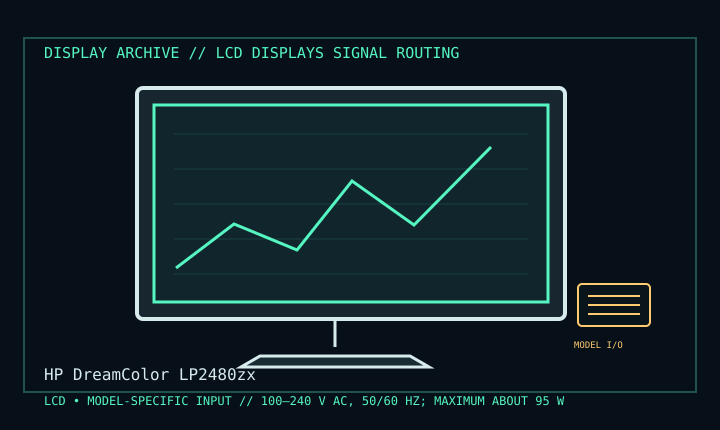

[ INDIVIDUAL COMPONENT // DISPLAY ARCHIVE ]
HP DreamColor LP2480zx
24-inch DreamColor wide-gamut reference LCD with RGB LED backlight, late 2000s.

IDENTIFICATION: Match the exact model suffix, region and installed option boards to the cited manual and rear label. Do not infer electrical compatibility from connector shape.
Model-specific specifications
| Catalog class | Lcd Displays |
|---|---|
| Exact product | HP DreamColor LP2480zx |
| Era / purpose | 24-inch DreamColor wide-gamut reference LCD with RGB LED backlight, late 2000s. |
| Panel / image | 24-inch IPS TFT LCD, 1920 × 1200 WUXGA at 60 Hz; RGB LED backlight and 10-bit/channel processing capability. |
| Inputs | Two DVI-I, DisplayPort, HDMI, component, S-video and composite inputs; USB hub. Confirm exact connector use in HP input matrix. |
| Power / mechanical | 100–240 V AC, 50/60 Hz; maximum about 95 W in cited QuickSpecs. Height/tilt/swivel/pivot stand and 100 mm VESA. |
| Color / calibration | DreamColor color-management presets and wide gamut; source bit depth, input format and calibration workflow govern effective output. |
Revision, timing & host compatibility
Distinguish LP2480zx from LP2480zx variants and other DreamColor models. Use DisplayPort/DVI/HDMI for computer WUXGA; analog video connectors carry different formats. A high gamut does not mean the source/OS is color-managed—retain ICC/profile and exact input color-space settings.
Before operation, compare source signal type, scan/frame timing, pinout, interface bandwidth, input-board configuration and mains/DC rating against the model-specific manual and nameplate. A listed maximum mode is not a promise of optimum image quality.
Vintage preservation & repair notes
Log calibration state and LED uniformity, save profiles and preserve the original stand and hood. Avoid panel pressure; follow HP cleaning and service instructions. RGB LED module, power supply and optical stack require model-trained repair rather than speculative part substitution.
Record serial/date code, configuration, all installed interface boards, accessories, image condition, calibration state, test source and document edition. Disconnect power before external cleaning and use only the manufacturer-approved procedure; do not open CRT/LCD/OLED equipment without qualified service practice.
Manufacturer manuals & specifications
- HP LP2480zx QuickSpecsHP specification document for panel, inputs, power and mechanics.
- HP DreamColor LP2480zx Manuals & SupportManufacturer support page with product manuals and service references.